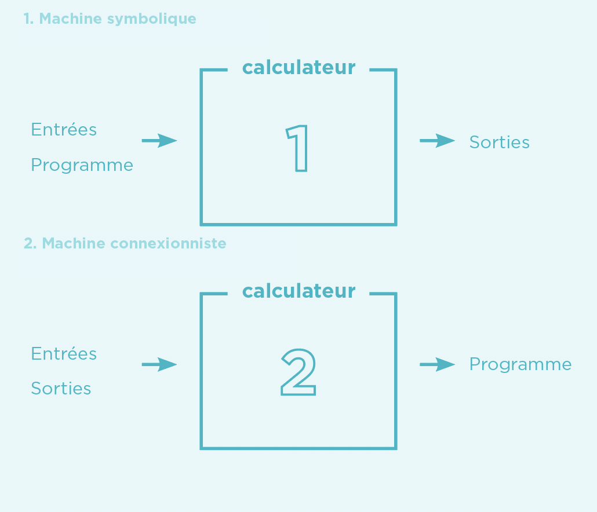

IA et enjeux de l’automatisation, partie 1¶
Cette première partie du dossier IA et enjeux de l’automatisation propose une contextualisation historique de l’émergence de l’intelligence artificielle en présentant quelques moments clés de la discipline. Il est complété par un état des lieux concernant les différents usages et applications actuels des technologies de l’apprentissage automatique.
Objectifs¶
Comprendre le contexte d’émergence de l’intelligence artificielle
Différencier les courants symbolique et connexionniste
Se rendre compte de la pluralité des applications de l’IA
Identifier des situations du quotidien où l’IA intervient
Enjeux¶
Depuis la moitié du XXe siècle, les scientifiques essaient de simuler le raisonnement grâce aux machines. L’histoire de l’intelligence artificielle est d’abord marquée par de grandes ambitions et connaît successivement plusieurs phases d’engouement et de déceptions. Elle se nourrit et nourrit elle-même des récits de science- fiction, dont les personnages artificiels, robots, androïdes ou simples voix de synthèse, influencent à leur tour les imaginaires collectifs. En résultent de nombreuses croyances, des craintes, mais également des espoirs, qui ne correspondent pas toujours à l’état des avancées technologiques actuelles.
Les récentes performances dans le domaine de l’apprentissage automatique appellent à une réflexion sur la définition de l’IA en tant que catégorie générale d’une part, et sur les particularités des technologies qu’elles englobent d’autre part. Un retour aux sources du projet visant à simuler le raisonnement permettra également de comprendre les motivations, les ambitions mais aussi les limites de certaines applications de l’IA.
🧠 IA, une définition¶
L’intelligence artificielle est un terme à la mode, fréquemment évoqué dans le débat public et dans les médias. Malgré cette popularité certaine, rares sont les tentatives d’expliquer précisément ce qu’est l’IA. Il s’agit en fait d’une notion générique qui désigne différentes technologies du traitement automatique de l’information, ayant pour objectif de simuler le raisonnement. Aujourd’hui, l’IA fait principalement référence à l’apprentissage automatique, aussi connu dans sa version anglaise de machine learning.
Les technologies de l’IA partagent des caractéristiques communes. Elles sont développées par des informaticiens et visent à imiter certaines fonctions cognitives propres à l’être humain: l’apprentissage de règles, le raisonnement logique, le langage, la planification ou encore la reconnaissance d’images ou de sons. Pour ce faire, une modélisation de ces processus est nécessaire à l’aide des mathématiques, de l’algorithmique et de la programmation.
Un contexte socio-technique favorable a permis aux premières tentatives de simulation de l’intelligence de voir le jour. Dans les années 1940, le mathématicien Norbert Wiener développe la cybernétique, un courant de pensée permettant d’appréhender conjointement le fonctionnement du vivant et des machines à partir des théories de la communication. Tous deux auraient les mêmes capacités d’adaptation basées sur des capteurs percevant leur environnement. Très populaire au sein de l’élite scientifique américaine, cette approche pose les bases théoriques nécessaires à l’émergence de l’IA.
Sur le terrain, le développement des premiers calculateurs électroniques durant la Seconde Guerre mondiale permet de tester le potentiel de la cybernétique. Deux approches principales vont se distinguer et s’opposer au fil de l’histoire, avec d’un côté l’IA connexionniste et de l’autre l’IA symbolique.
📜 Un peu d’histoire¶
L’histoire de l’IA est principalement composée de deux courants distincts qui ambitionnent de simuler le raisonnement humain grâce aux machines. Longtemps ostracisée par l’approche symbolique, l’IA connexionniste s’est aujourd’hui imposée avec les performances de l’apprentissage automatique et des réseaux de neurones, inspirés des connaissances du cerveau humain.
En 1955, les mathématiciens américains John McCarthy et Marvin Minsky organisent le premier projet de recherche sur l’intelligence artificielle et fondent l’année suivante le domaine scientifique de l’IA. Leurs ambitions sont clairement énoncées : ils s’appuient sur la conjecture que l’apprentissage et l’intelligence sont des processus suffisamment compris pour qu’ils puissent être reproduits artificiellement. Ils envisagent ainsi de modéliser le raisonnement grâce à des manipulations mathématiques et logiques de symboles.

Fonctionnement d’une machine symbolique (1) et connexionniste (2). En haut, les informations nécessaires aux calculateurs sont fournies a priori afin d’obtenir les résultats. En bas, la machine connexionniste déduit le modèle en fonction des entrées et des sorties.1
Les systèmes experts, qui connaissent un important succès dans les années 1980, appartiennent à ce courant. Trop complexes, ils offrent des résultats peu satisfaisants et sont abandonnés en une décennie. Débute alors une période creuse en terme d’avancées scientifiques, parfois appelée hiver de l’IA. Aujourd’hui, les systèmes experts sont toujours utilisés dans des domaines tels que les jeux vidéo, mais ils ne font plus partie du domaine scientifique de l’IA.
Depuis le milieu des années 2000, les performances de l’approche connexionniste permettent un retour en force de l’IA. Contrairement à l’IA symbolique, elle s’inspire directement du fonctionnement du cerveau humain. Ce projet prend racine dès 1943, grâce aux neuroscientifiques américains Warren McCulloch et Walter Pitts, qui proposent pour la première fois un modèle mathématique représentant un neurone. Le terme n’existe pas encore à l’époque, mais cette date marque le début de l’approche connexionniste de l’IA. Sur la base des connaissances en biologie, les neurones formels vont être mis en connexion afin de former des réseaux et de simuler l’apprentissage. Pour ce faire, les neurones captent les signaux de leur environnement et établissent des modèles prédictifs sur une base d’entrées et de sorties (cf. Schéma ci-contre).
En 1989, l’ingénieur français Yann LeCun s’inspire de la métaphore des neurones et crée un réseau multicouche capable de reconnaître automatiquement des codes postaux manuscrits. Cette technique sera reprise par le secteur bancaire afin de lire automatiquement des chèques. Il s’agit de l’une des premières utilisations à grande échelle d’une technique d’apprentissage automatique basée sur des réseaux de neurones formels.
Près de trois décennies plus tard, l’optimisation des réseaux de neurones et des algorithmes, associée à l’augmentation considérable de la puissance de calcul des ordinateurs et aux importants volumes de données disponibles (big data), replacent l’IA au centre des intérêts scientifiques et technologiques. En effet, les masses de données sont un élément essentiel à l’entraînement des modèles d’apprentissage
🎆 Pluralité des applications¶
La difficulté à définir précisément l’IA réside en partie dans la pluralité de ses techniques et de ses applications. Les prochains exemples, non-exhaustifs, permettent de se rendre compte de la diversité des champs d’application de l’IA et de l’évolution de l’utilisation de certaines technologies.
Les débuts de l’IA sont étroitement liés aux institutions militaires américaines. Dans un premier temps, les technologies du traitement automatique de l’information reçoivent d’importants financements de la part de la marine (ONR) et du Département de la défense (DARPA). Elles comprennent les premiers programmes de traduction automatique, les logiciels de reconnaissance d’images ou encore la conduite autonome. Aujourd’hui encore, la maîtrise des technologies de l’IA est toujours considérée comme un défi central dans le secteur militaire à travers le monde.
Petit à petit, ces technologies ont été adaptées à des usages plus variés. La traduction automatique est désormais utilisée dans nos pratiques quotidiennes. La reconnaissance de formes et d’images est employée en médecine et contribue notamment à l’amélioration de la détection de certaines tumeurs. Google et Tesla tentent d’intégrer la conduite autonome au trafic. L’IA façonne également les contenus que nous voyons sur le Web grâce à ses algorithmes de hiérarchisation et de modération.
Ces exemples montrent que les motivations initiales à produire de nouvelles technologies peuvent être largement détournées en quelques décennies. Les technologies ont les mêmes fondements, mais les usages se sont diversifiés et banalisés. Désormais, elles sont le plus souvent développées et proposées par des entreprises privées. L’arrivée de l’IA dans nos quotidiens invite à réfléchir aux multiples possibilités d’automatisation et aux conséquences que ces dernières peuvent avoir sur les individus et la société.
🖥 L’IA et les pratiques en ligne¶
Avec l’avènement des médias sociaux, les entreprises proposant leurs services sur Internet ont accès à des volumes de données inédits concernant leurs utilisateurs. L’IA est utilisée pour gérer et trier ces importants flux d’informations.
Les moteurs de recherche, les médias sociaux et les plateformes de streaming récoltent et agrègent automatiquement les traces numériques laissées par les internautes afin de leur suggérer du contenu personnalisé. L’exploitation de ces traces permet, d’une part, de fidéliser l’internaute en lui proposant du contenu et des services personnalisés et, d’autre part, d’optimiser les placements publicitaires.
Plusieurs problèmes émergent face à l’exploitation massive des données personnelles. Ces méthodes impliquent que des informations parfois sensibles telles que l’orientation politique, sexuelle ou religieuse d’une personne soient détenues par des entreprises privées. Elles touchent directement à la protection de la vie privée. Les interactions avec les contenus, du simple clic aux mentions « j’aime », sont également enregistrées et utilisées à des fins prédictives. L’ensemble des traces récoltées par les différentes plateformes sont exploitées par des algorithmes qui établissent des prédictions pour des individus aux comportements et aux goûts apparemment similaires.
Le traitement automatique des données crée ainsi des bulles de filtre, qui tendent à enfermer les internautes dans un monde construit uniquement sur leurs habitudes en ligne et lses contenus qu’ils consultent. Comme les prédictions sont établies à partir des traces passées, les publications correspondant à ces informations seront suggérées. Bien que les bulles de filtre ne soient pas propres aux pratiques numériques, l’automatisation du traitement des données tend à les amplifier.
Les algorithmes sont également utilisés pour modérer les contenus illégaux ou qui ne respectent pas les conditions d’utilisation des plateformes. Cependant, la modération automatique des réseaux sociaux n’est pas toujours efficace et l’incapacité à contextualiser une information engendre des situations discriminantes. Ainsi, en avril 2019, Facebook a automatiquement empêché la création d’un compte de soutien LGBT+, sous prétexte que le mot «lesbienne» contrevenait aux règles de la plateforme. Plus généralement, la modération automatique n’est pas assez performante pour localiser et gérer la totalité des contenus problématiques de manière satisfaisante. Elle engendre un risque de censure injustifiée, spécialement marqué pour des communautés déjà sous-représentées. Le principe de liberté d’expression est ainsi menacé par la modération automatisée. Pour tenter de résoudre ce problème, une partie du travail de modération est externalisée et effectuée par des êtres humains.
La pluralité des applications de l’IA et la complexité de son fonctionnement amènent à réfléchir aux questions de délégation et de régulation relatives à ces technologies. Quelles tâches peuvent être déléguées à l’IA? Est-il toujours souhaitable d’automatiser les prises de décisions? Comment gérer et réguler ses décisions? Ces thématiques sont présentées dans la deuxième partie du dossier.
Ressources¶
Le livre du sociologue Dominique Cardon, À quoi rêvent les algorithmes (2015)
Le livre de l’informaticien et philosophe Jean-Gabriel Ganascia Le Mythe de la singularité (2017), qui déconstruit les croyances autour de l’intelligence artificielle
L’article du sociologue Marc Audétat sur la rhétorique de la promesse dans les technosciences, publié dans Allez Savoir ! (pour l’activité 1b)
Le documentaire AlphaGo sur sa victoire au jeu de Go face à Lee Sedol
L’exposition « Intelligence artificielle, nos reflets dans la machine » au Musée de la Main de Lausanne, jusqu’au 23 avril 2023
Glossaire¶
Apprentissage automatique (Machine learning)
Apprentissage par renforcement
Apprentissage profond (Deep learning)
Apprentissage supervisé et non-supervisé
Boîte noire
Bulle de filtre
Cybernétique
Hiver de l’IA
Intelligence artificielle connexionniste
Intelligence artificielle symbolique
Réseaux de neurones
Système expert
Pistes pédagogiques¶
Pour des idées d’activités sur cette thématique, voir le dossier.
- 1
Schéma adapté de : Cardon, D., Cointet, J. & Mazières, A. (2018). La revanche des neurones: L’invention des machines inductives et la controverse de l’intelligence artificielle. Réseaux, 211, 173-220.
☝ Comment ça marche ?¶
Pour établir des modèles prédictifs efficaces, les réseaux de neurones de l’IA connexionniste sont entraînés par des algorithmes à traiter et agréger d’importantes quantités de données. On parle d’apprentissage automatique puisque les algorithmes établissent des modèles à partir des données qui leur sont fournies. Il existe plusieurs types d’apprentissages.
L’apprentissage supervisé requiert l’intervention humaine pour labelliser les données, corriger les erreurs lors des phases d’entraînement et obtenir les modèles souhaités. Par exemple, pour apprendre à reconnaître un chat, un algorithme considère des milliers d’images préalablement étiquetées “chat” ou “non-chat” afin d’établir un modèle prédictif qui pourra être appliqué à des images inconnues. Contrairement au cerveau humain, qui n’a besoin que de quelques exemples pour reconnaître une forme, l’IA connexionniste nécessite des volumes importants de données pour établir ses modèles. L’apprentissage non supervisé consiste à laisser l’algorithme déterminer ses propres modes de classification et catégories sans intervention externe.
En 2016, le programme AlphaGo de DeepMind (Google) bat pour la première fois un joueur professionnel au jeu traditionnel de Go. Une combinaison des différentes méthodes prenant en compte des parties disputées par des joueurs humains et d’apprentissage par renforcement uniquement basé sur l’expérience de la machine permet à AlphaGo de déduire les coups optimaux. La dernière version du programme baptisée AlphaGo Zero est parvenue à battre n’importe quel joueur humain, ainsi qu’AlphaGo lui-même, en ne connaissant que les règles du jeu.
Les performances actuelles de l’apprentissage automatique sont certes considérables et dépassent dans certains cas les capacités humaines. Leurs perspectives demeurent cependant limitées car chaque réseau de neurones est dépendant du contexte dans et pour lequel il est développé. Il n’est à ce jour pas possible d’envisager de les transférer dans un environnement différent sans un important travail de ré-apprentissage supervisé par des humains. Pour cette raison, l’IA connexionniste actuelle est souvent qualifiée d’IA faible ou étroite, en opposition au projet hypothétique d’IA forte, qui ambitionne de modéliser toutes les facettes de l’intelligence, y compris la conscience et les émotions.
Par ailleurs, l’IA connexionniste est fréquemment associée à un enjeu de transparence. En effet, malgré l’efficacité de certains modèles prédictifs, la complexité des réseaux de neurones créent l’effet d’une boîte noire, caractéristique de l’apprentissage automatique. Même les concepteurs des algorithmes ne sont pas en mesure d’expliquer précisément les décisions de leurs programmes. Cet aspect est souvent présenté comme l’un des défis majeurs de l’IA contemporaine. Il est intéressant de souligner que l’enjeu de transparence concerne uniquement les prises de décision automatisées. En comparaison, les nombreuses décisions prises par les êtres humains au quotidien ne semblent pas concernées par cette injonction à la transparence. Pourtant, elles ne sont pas toujours explicables ni expliquées.
L’effet boîte noire ne remet cependant pas systématiquement en cause l’application de l’apprentissage automatique. L’impossibilité d’expliquer certains choix doit toutefois être prise en compte, en l’intégrant à des processus non automatisés. L’appréciation humaine demeure indispensable pour éviter des prises de décisions arbitraires.